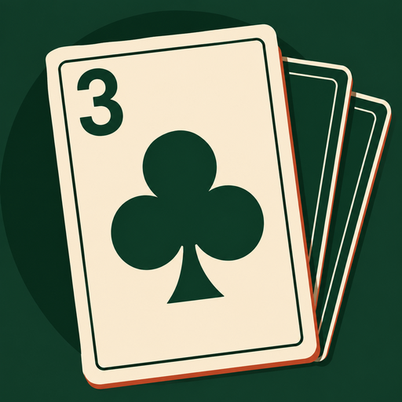

Tres – Pusoy Dos
A card game by North Pixel Labs
Pusoy Dos — the Filipino card classic, also known as Big Two — played solo against three AI opponents or with friends on the same Wi-Fi.
Get it on Google PlayWhat the app does
Tres is a complete game of Pusoy Dos for Android. The 3 of clubs opens every game. Play a single, a pair, a trio or a five-card hand, beat what is on the table, or pass. Every game runs all the way out to a full 1st, 2nd, 3rd and 4th place.
- Play together, offlinePlay with 2–4 friends on the same Wi-Fi, with no internet. Host a room, join with a Room Code or QR, and fill any open seats with AI.
- Play anywhereThe whole game runs on your device. Tres never needs a connection to deal.
- Three levels of opponentEasy, Standard and Expert. The opponents hold back their control cards and make you earn the lead.
- Make the table yoursUnlock table themes with Cosmetic Tokens earned by playing and collecting Milestones. Every purchase is cosmetic only.
Google Play Games — optional
If you choose to sign in to Google Play Games, your Milestones appear as achievements on your Play Games profile, and your progress can be backed up to your own Google account and restored on another phone. The game is complete without it, and nothing is sent unless you are signed in. This arrives in version 1.18.0 of the app.
Privacy
The game runs on your device, not on our servers. Google serves the ads between games and handles Shop payments. Read exactly what is stored and what is sent in the privacy policy.